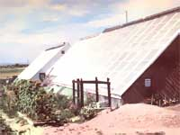
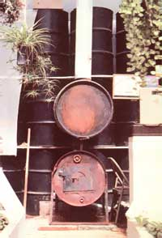
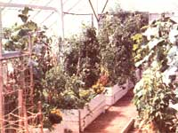
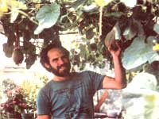

Nowadays, more and more folks are trying to achieve some independence by producing their own food ...but doing so can be difficult for urban dwellers who don't have the land, time, or resources necessary to invest in full-scale gardening. The townspeople of Cheyenne, Wyoming have found one solution to that dilemma, however ...working together, they built-and now operate-a community solar greenhouse that makes fresh vegetables available to many residents of the city, with the emphasis on providing free produce to folkswho otherwise couldn't afford to garden.
In 1976, Community Action of Laramie County (a citizens' group incorporated to administer antipoverty programs) established a grant for the construction of an experimental community hothouse. A training program for volunteer construction workers then got under way ...and the actual building was started-on a donated tract of land in the summer of 1977. Most of the materials used were either recycled scrap or donations to the cause, so the overall cost of the greenhouse turned out to be quite low for a project of that size. The original $42,700 grant given by CALC was supplemented by $13,000 from the Community Services Administration and $2,000 from the county government. The final price tag, then, came to $57,700 ...which is quite inexpensive for a structure that serves as a large-scale food-producing"factory"!
THE NUTS AND BOLTS
Since the greenhouse supplies vegetables for a great many people, it may surprise you to know that the installation's passive solar heating system consists of nothing more than the building's southfacing glazing and a number of hand-operated vents. Thermal mass for the 5,000-square-foot structure is provided by two hundred 55-gallon drums that are filled with water and painted black. The double glazing is made up of a layer of Filon plastic on the outside and Monsanto 602 on the inside. The building's walls, ceiling, and floor are all insulated: Polyurethane foam was applied around the floors, and eight to ten inches of fiberglass batting elsewhere.
The setup appears to be working just fine, too. Shane Smith, a practicing horticulturist and director of the greenhouse, reports that the lowest temperature yet recorded inside the enclosure was 34°F (which did no damage to the cold-tolerant plants being grown at the time) ...and, he notes, "That low mark was registered after ten cloudy days, with wind gusts up to 50 MPH and an outside low of -15°F." Furthermore, the backup heat source -consisting of two homemade woodstoves-has never been used, even during the coldest Wyoming winter in 50 years!
The gardening procedures employed in the solar arboretum are as basic and natural as is the building's solar heating system. A composting bin at the back of the structure provides a ready source of nutritious mulch for the crops ...and only biological pest control is practiced. Permanent inhabitants of the mini-ecosystem include ladybugs, lacewing flies, chameleons, praying mantises, and fireflies. Three kinds of predator mites, and a species of wasp that reduces the population of white flies, also help keep destructive insects under control.
WILLING WORKERS ...AND CUSTOMERS
Initially, the Cheyenne Community Solar Greenhouse was staffed solely by senior citizens ...who volunteered their labor in return for a share of the bounty produced by the facility. However, that work force has since been expanded to include volunteers of all ages (who are eager for the chance to pick up hands on experience in gardening techniques), youthful offenders (they work off their court sentences by completing a variety of duties at the site), and handicapped individuals (who are able to combine job training and horticultural therapy).
And the efforts of that diverse crew turn out a lot of food: Melons, cucumbers, tomatoes, squash, figs, artichokes, and all kinds of flowering plants burst forth in the summer and fall ...and they're followed in the winter by cabbage, broccoli, mustard, lettuce, and every imaginable root crop. In addition, herbs are cultivated year round in the Cheyenne greenhouse. All told, the list tops 500 species of plants!
So where does all that produce end up? Well, it's parceled out according to a somewhat complex system, as Director Smith explains: "Our low-income volunteers get first pick ...then the rest of the staff receives a share. What's left-that is, the bulk of the harvest-is given to the local Meals on Wheels program and the community human services department, which distribute the food among low-income households." Smith also notes that -since the greenhouse's first crop was planted in 1978-yields have increased steadily each year, and the solarium now grows enough to feed about 300 people a day!
OTHER PROJECTS
But the Cheyenne Community Greenhouse does much more than produce a constant supply of homegrown vegetables. The facility also serves as a demonstration site where schools, churches, and other civic groups can see passive solar energy in operation. Gardening classes and horticultural workshops are offered at the greenhouse on a regular basis, too ...while a working apiary project shows visitors how to raise bees and harvest their own honey.
In addition, low-income families are allowed to grow their own food in one of the center's 20 outdoor 10' X 30' garden plots or during cooler weather-in provided cold frames. A community root cellar in which the staff plans to store extra produce (especially root crops, which grow well in this northern climate) is also in the works. Finally, the greenhouse sponsors an annual farmers' market in the city park, where local growers can sell their fresh fruits and vegetables directly to the public.
In short, the project continues to expand its usefulness, and everyone who's involved with the Cheyenne Community Solar Greenhouse is quite enthusiastic about sharing a concept the workers believe could be adapted successfully to any community. For this reason, they've prepared a slide and audio presentation that describes their experience ...and they've developed a national internship plan that's designed to help people from other communities learn how to plan and manage similar facilities in their own areas. For more information about the two programs, write to Cheyenne Community Solar Greenhouse, Dept. TMEN, 1603 Central Avenue, Bell Building 400, Cheyenne, Wyoming 82001.
EDITOR'S NOTE: If you're interested in owning a smaller-scale, do-it-yourself hothouse, you might like to try constructing MOTHER's Year-Round Solar Greenhouse, a building that'll keep you in vegetables regardless of the season. A set of plans (with detailed architectural drawings and a complete list of materials) can be obtained for $15-from Mother's Plans, P.O. Box A, East Flat Rock, North Carolina 28796. You can also order plans for the smaller, $140 Backyard Greenhouse by sending $10 to the same address. (Please include $1.00 shipping and handling with all orders.)
|
 Photos By The Author The passive solar design of Cheyenne's greenhouse includes double glazing and |
 A bank of storage drums. |
 A variety of crops are grown year round inside the hothouse |
|
 Director Shane Smith shows off some prize melons. |
|
|